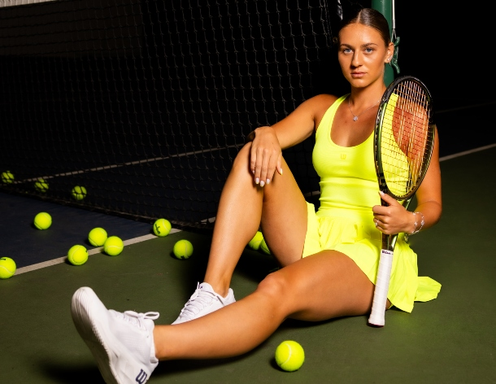

Ben Shelton( U.S.A.) : Tokyo Open ( ATP 500): October 14 - October 22

Ben Shelton has been having his best season so far this year and surprisingly , it has been his first full season . Shelton played for the University of Florida in Gainsville , Florida for 2 seasons for his father Brian Shelton and won the NCAA singles title in 2022 . After having such as a sucessful college career Shelton decided to go pro and his ranking has gradually increased over the last year and a half . Before Shelton won this title , he made the semi-finals at the U.S open and the quarter finals of the Australian open . This had given him a lot of confidence coming into the tournament . During the week of the tournament Shelton had to play 5 intense matches to win the tournament . He beat Taro Daniel of Japan in the first round with a score line of 3-6 , 6-4 7-6 . In the second round , he beat Jordan Thompson of Australia with a scoreline of 6-7 , 6-4 , 6-3 . In the quarter finals he beat 5th seeded Tommy Paul of the U.S.A. with a scoreline of 7-6 , 6-3 . In the semi's he beat fellow American Marcos Giron 6-7 , 7-6 , 6-4 . In the final he beat Russian Aslan Karatsev with a scoreline of 7-5 , 6-1 . This tournament was a very sucessful week for Shelton and helped bring his ranking into the top 15 for he first time.
Chris Eubanks( U.S.A.) :Mallorca Open, Mallorca, Spain ( ATP 250) :2023.06.26 -2023.07.01

After saving five match points against Lloyd Harris in a dramatic semi-final victory at the Mallorca Championships on Friday, Christopher Eubanks left no doubt in Saturday's final. Playing in his first ATP Tour final, the American powered to a 6-1, 6-4 victory against Adrian Mannarino. Eubanks did not face a break point in the match and closed out his third Top 50 win in just over an hour at the ATP 250. Behind his title triumph, Eubanks is set to debut inside the Top 50 of the Pepperstone ATP Rankings himself at No. 43 entering Wimbledon. Eubanks' was able to be in the top 50 due to his run at the Miami Open presented by Itau in March, when he came through qualifying to reach the quarter-finals — his first time beyond the second round at an ATP Masters 1000. The 27-year-old is set to make his Wimbledon main-draw debut next week, and he will be full of confidence on the London lawns. With his five match point saves in the Mallorca semis, Eubanks is the sixth ATP Tour champion this season to save match points en route to the title.
Zhu Lin( China) : Hua Hin Open ( WTA 250): Jan 28 to Feb 5

Zhu Lin's tremendous start to 2023 continued at the Thailand Open presented by E@, where she captured her first Hologic WTA Tour title with a 6-4, 6-4 defeat against Lesia Tsurenko of Ukraine in a 1-hour, 45-minute final. Last month, Zhu served notice of her improved form by reaching the Auckland quarterfinals and the Australian Open fourth round, scoring wins over Maria Sakkari and Venus Williams en route. After pushing Victoria Azarenka to three sets in the Melbourne last 16, the former World No.1 predicted that Zhu could be a future Top 20 player. At a career high of No.54 coming into Hua Hin, Zhu's title run will see the Chinese player make her Top 50 debut next week. Zhu had previously won one WTA 125 title, at Seoul 2021, but prior to this week had only made two semifinals at main tour level, at Kuala Lumpur 2016 and Nanchang 2018. Having dropped just one set in Hua Hin, in the first round to No.3 seed Wang Xiyu, Zhu's record this season now stands at 10-3. Former World No.23 Tsurenko, who has struggled with injuries in recent years, was contesting her first final since Brisbane 2019. The 33-year-old's overall record prior to this tournament and including it is 10-2 (4-2 at tour level), and she will also receive a significant boost from her current No.136 ranking.
Maria Timofeeva( Russia) : Budapest Open ( WTA 250): July 17 - July 23

This tournament took place in Budapest , Hungary , is a WTA 250 , and is played on red clay. Maria came into this tournament as a lucky loser who had lost in the final round of qualifying 1-6 , 6-3 , 6-7 to Anna Siskova of the Czech Republic. In the first round , she played Daria Saville of Australia and won 2-6, 6-3 , 6-4. In the second round , she beat Diana Shnaider of Russia 6-1 , 6-1 . In the quarter fiinals she beat qualifier Kaja Juvan of Slovenia 3-6 , 6-3 , 6-2 . In the semi-finals she beat 9th seeded Nadia Podoroska of Argentina 7-6, 3-6, 6-3. In the final , she beat Kateryna Baindl of Ukraine 6-3 , 3-6 , 6-0.
Alycia Parks( U.S.A) : Lyon Open(WTA 250) : Jan 30 - Feb 5

Alycia had a great ending to her season winning the Andorra Open and the Angers Open. In doing so , she was able to compile a 10 match winning streak going into the next year. Alycia's first tournament of the season was at the Australian Open and she had lost in the second round of qualifying . This not give her a lot of hope , going into the Lyon Open . Depsite this , she would go on to win the title and reclaim her winning streak. In the 1st round , she beat Julia Grabher of Austria 6-3 , 5-7 , 6-4. In the second round , she beat 4th seeded Petra Martic of Croatia 2-6 , 7-6 , 6-2. In the quarter finals , she beat 7th seeded Danka Kovinic of Montenegro 7-5 , 6-2. In semi-finals she beat Maryna Zaneska of Belgium 6-3 7-6 , which would be her first WTA final . In the final , she would play home favorite Caroline Garcia of France and would end up winning 7-6 7-5.
Katie Boulter( U.K) : Nottingham Open ( WTA 250) : June 12 - June 18

In the first all-British final on the Hologic WTA Tour in 46 years, British No.1 Katie Boulter defeated Jodie Burrage 6-3, 6-3 to win the Rothesay Open in Nottingham, England. Boulter overtook Emma Raducanu in the rankings at the start of the week to become the highest-ranked British woman on tour. She obtained that status by extending her record against her fellow British players to 5-0. Into the draw as a wild card, she defeated four of her compatriots en route to the title, notching wins over Emily Appleton, Harriet Dart, Heather Watson and Burrage. She did not drop a set in the tournament. Coming into the tournament ranked No.126, Boulter will return to the Top 100 for the first time since 2019. The stakes were high as Boulter and Burrage took the court on Sunday for the first all-British final since 1977. Into the first WTA final of their respective careers, Boulter and Burrage were each bidding to become the first British champion since Raducanu won the 2021 US Open. Ranked No.131, Burrage enjoyed an outstanding week in Nottingham. In her first tour-level appearance this season, she defeated Tereza Martincova, Magda Linette, Magdalena Frech and Alizé Cornet. Boulter came into the final with a 2-0 lead in the head-to-head series against Burrage, including a three-set victory in the final of the ITF W60 in Canberra earlier this season. Sunday's final in Nottingham was just the third all-British final in the last 50 years of the WTA Tour. The only previous all-British finals were between Sue Barker and Virginia Wade at 1975 Paris and 1977 San Francisco.
Pedro Cachin ( Argentina ) : Gstaad Open ( ATP 250): July 15 - July 23
Pedro Cachin captured his first ATP Tour title on Sunday when he overcame Spaniard Albert Ramos-Vinolas 3-6, 6-0, 7-5 at the EFG Swiss Open Gstaad. The Argentine had a lot of power throughout the two-hour, 23-minute final, forcing Ramos-Vinolas deep with his explosive groundstrokes before using the drop shot to great effect. Competing in his first tour-level final, the 28-year-old recovered from squandering a break advantage in the third set, raising his level again deep in the decider to become the fifth first-time champion on the ATP Tour this year. With his victory, Cachin has climbed 41 spots to No. 49 in the Pepperstone ATP Live Rankings. The Argentine's previous career-high was No. 54 last November. He arrived at the event holding a 9-18 on the year, and had only previously made one tour-level quarter-final, at Cordoba in 2019. Cachin, who was making his debut in Gstaad, did not drop a set en route to the final. He defeated Taro Daniel, Roberto Bautista Agut, Jaume Munar and Hamad Medjedovic before overcoming Ramos-Vinolas in their first meeting.
Arthur Fils ( France) : Lyon Open ( ATP 250): May 21 - May 27
The Frenchman captured his first tour-level title on Saturday at the Open Parc Auvergne-Rhone-Alpes Lyon, where he defeated Francisco Cerundolo 6-3, 7-5 to become the youngest champion in tournament history. The 18-year-old, who overcame Brandon Nakashima in three sets in the semi-finals, played aggressively throughout the one-hour, 36-minute final. He showed great agility and overpowered the fourth-seeded Argentine in their first ATP meeting. With his 10th tour-level win of the season, Fils has become the youngest champion on the ATP Tour this year. He is also the third teenager to win a trophy in 2023, joining Carlos Alcaraz (Indian Wells, Barcelona, Buenos Aires) and Holger Rune (Munich). Fils reached semi-finals on home soil in Montpellier and Marseille earlier this season. He found another level in Lyon, though. With his title victory, he climbed to third in the Pepperstone ATP Live Next Gen Race. The Frenchman is also set to crack the Top 100 for the first time, rising 49 places to No. 63 in the Pepperstone ATP Live Rankings. Cerundolo was aiming to capture his second tour-level trophy, having triumphed in Bastad last season. The 24-year-old will arrive at Roland Garros holding a 13-9 record on clay in 2023, after reaching the quarter-finals in Rome and Barcelona.
Wang Xiyu ( China) : Guanzhou Open ( WTA 250) : September 16 -September 23
Wang hadn't really have spectacular results all year . She made the round of 32 at The Miami Open which s a WTA 1,000 tournament and made the round of 16 at Indian Wells which also a WTA 1,000 turnament. This tournament was played on hard and was a WTA 250 tournament . Wang Xiyu captured her first Hologic WTA Tour title on Saturday after defeating Australian Open semifinalist Magda Linette, 6-0, 6-2, in the final of the Galaxy Holding Group Guangzhou Open. The 22-year-old lost just one set and became the fifth home-soil champion this season. Entering the week ranked No.88, Wang became the fifth Chinese champion in Guangzhou, following in the footsteps of Wang Qiang (2018), Zhang Shuai (2013 and 2017), Yan Zi (2005) and Li Na (2004). She is the third Chinese champion this season, after Zhu Lin (Hua Hin) and Zheng Qinwen (Palermo). This is the first time since 2006 that players from China won three titles in a season. Competing in her first WTA final, Wang was eyeing her first win over Linette. The Pole won their only prior meeting in the 2020 Hua Hin quarterfinals. With her heavy lefty forehand and precision serving, Wang dominated the opening frame of the match. She landed 84 percent of her first serves and never faced a break point. Along with her serving dominance, Wang hit eight winners to six unforced errors, while holding Linette to four winners. Wang finished the match with 28 winners to 15 unforced errors, converting six of the 13 break points she earned. Linette was able to break once, but she was limited to just eight winners to 11 unforced errors.
Arantxa Rus ( The Netherlands) : Hamburg Open ( WTA 250): July 22 - July 30
Arantxa has been on the WTA Tour since 2008 . During her time on the tour prior to winning her first title , she had only been to no more than 4 semi finals on the tour , hadn't done the best at grand slam tournaments , and had not reached any wta finals before . Arantxa's best surface was clay and that was what this tournament was played on .Additionally , it was a WTA 500 that ws in Hamburg , Germany. During this week , Arantxa had to play 5 matches . Her first match was against Maria Timofeeva of Russia who had come into the tournament very confident because she had just won a title from coming from the qualifying . Arantxa beat Maria 6-2 , 4-6 , 6-1 . In the second round , she beat Nadia Podoroska of Argentina 6-3 , 3-6 , 7-5 . In the quarter final , Arantxa beat home favorite Eva Lys of Germany 6-2 , 6-2 . In the semi finals Arantxa beat Daria Saville of Australia 2-6 , 6-3 , 6-1 . In the final she beat another home favorite Noma Akague Noha of Germany 6-0 , 7-6 .
Ashlyn Krueger( U.S.A.) : Japan Women's Open ( WTA 250): Sep 9 - Sep 17
Ashlyn , earlier this year in the summer she made the quarter finals on grass in 's-Hertogenbosch, where she beat 3rd seeded Victoria Azarenka 6-3 , 6-2 . Ashlyn hadn't won a WTA maindraw match at all this year and was seeking it . During this tournament , Ashlyn wouldn't drop a single set . In route to to the title , she beat 8th seeded Kateryna Baindl of Ukraine , Jessika Ponchet of France , Anna Kalinskya of Russia , Mai Hontama of Japan , and top seeded Zhu Lin . Zhu had only been her 2nd top 50 and her first on hard courts .
Yibing Wu ( China): Dallas Open ( WTA 250): Feb 6 - Feb 12
Yibing had recently made the final of the Cleveland challenger and gave him confidence into the upcoming tournaments. Yibing the following week would end up going all the way to the final . In doing so , he would end beating 4 seeded players. In the first round , he would beat Michael Mmoh of the U.S. 6-3, 3-6 , 6-3. In the second round , he beat 3rd seeded Denis Shapovalov of Canada 7-6 , 6-4. In the quarter finals , he beat 3 8th seeded Adrian Mannarino of France 6-3 , 6-4. In the semi finals , he beat number one seeded Taylor Fritz of the U.S.A. 6-7 , 7-5 , 6-4. In the final , he beat 5th seeded John Isner of the U.S. 6-7 , 7-6 , 7-6.
Tamara Korpatsch : Transylvania Open ( WTA 250): October 16 - October 22
The tournament was played in Cluj-Napoca , Romania and was a WTA 250 . Coming into this tournament Tamara had made 4 other WTA semi finals , but only one this season at the Prague Open in August . In addition , she had very unconsistent results in the prior months before this tournament . Throughout this week, Tamara had to play 5 matches . In the first round , she beat Leolia Jeanjean of France , 6-4 , 2-6 , 6-3 . In the second round , Tamara beat 8th seeded Jodie Burrage of England and had to save countlees match points . The final score was 2-6 , 6-2 , 7-6. In the quarter final Tamara beat Daria Snigur of Ukraine 3-6, 6-2 , 6-4 . In the semi finals Tamara played fellow German Eva Lys and won 6-4 , 6-3 . In the final Tamara beat home favorite Elena Gabriella Ruse of Romaina , 6-3 , 6-4 .
Qinwen Zheng ( China) : Palermo Open ( WTA 250): July 17 - July 23
No.2 seed Zheng Qinwen defeated Italy's Jasmine Paolini 6-4, 1-6, 6-1 in the final of the Palermo Ladies Open to secure her first career title on the Hologic WTA Tour. Ranked No.26 at the start of the week, Zheng became the 11th Chinese woman to win a WTA singles title. She joins Hua Hin champion Zhu Lin as the second Chinese champion of the season. Despite her inexperience on clay, the surface has been good for Zheng. Zheng is based in Barcelona , had her best Slam result at Roland Garros, advancing to the Round of 16 in the spring, and now captures her first title on clay. The win, her 20th of the season, improves her season record on clay to 11-4. Serving for the title at 5-1, Zheng misfired on her first two Championship Points but sealed the win on her third with a flurry of forehands, punctuated by her final winner of the match.
Marta Kostyuk ( Ukraine) : Atx Open ( WTA 250): Feb 26 - March 5 This year was the anagular year of this tournament and it was played on outdoor hardcourt. Additionally , it was a WTA 250. Marta pior made the quarters of Hua Hin , the quarter finals at Adelaide International 1 , and the round of 32 at the Australian Open prior to this tournament . At the Atx Open , Marta was seeded 8 and had to play 5 matches . The round of 32 was against Dalma Galfi of Hungary and won 7-5 6-1. In the round of 16 was against Madison Brengle of the U.S.A and won 6-3 , 3-6 , 6-0 . In the quarter-finals, she played Anna-Lena Friedsam of Germany and won 7-6 , 6-2 . In the semi-finals, she played Danielle Collins and won 6-4, 6-3. In the final, she beat Varvara Gracheva of France 6-3, 7-5.
Lucia Bronzetti ( Italy) : Rabat Open ( WTA 250): May 20- May 27
Lucia Bronzetti of Italy battled to her first WTA singles title at the Grand Prix Son Altesse Royale La Princesse Lalla Meryem overcoming Austria's Julia Grabher 6-4, 5-7, 7-5 in a back-and-forth final. In the clash between two players seeking their first title, it was World No.102 Bronzetti who prevailed in 2 hours and 48 minutes on the clay courts of Rabat and took a 2-1 lead in her head-to-head with Grabher. Bronzetti, had reached the Palermo final last year and peaked at No.50 this January, punctuated a huge turnaround in her recent WTA-level play with the title. Before coming to Rabat, the Italian had lost her last 10 tour-level main-draw matches. A home-soil run to the semifinals of the WTA 125 event in Florence last week kickstarted Bronzetti's return to form and gave her confidence. Bronzetti carried that level of play into Rabat, where she was a semifinalist last year. Bronzetti dropped only four games total in her quarterfinal and semifinal wins combined, but she was pushed all the way by Grabher in the final.
Elizabetta Cocciaretto ( Italy) : Lausanne Open ( WTA 250) : July 24- July 30
No.2 seed Elisabetta Cocciaretto of Italy captured her first Hologic WTA Tour singles title of her career on Sunday, overcoming Clara Burel of France 7-5, 4-6, 6-4 in the Lausanne Ladies Open final. In a battle between rising 22-year-olds, it was World No.42 Cocciaretto who beat 84th-ranked Burel after 2 hours and 43 minutes . With the win, Cocciaretto improved her head-to-head record against Burel to 2-0. Cocciaretto had previously won two of her matches this week from match point down, one against Celine Naef in the first round, and the other versus Anna Bondar in the semifinals. Cocciaretto is the first player to win two matches from match point down at the same tournament since Viktoria Hruncakova at Dubai 2019. The Italian No.1 Cocciaretto extended her breakthrough season at tour level with the title. In January, she reached her first WTA singles final at Hobart, finishing runner-up to Lauren Davis.